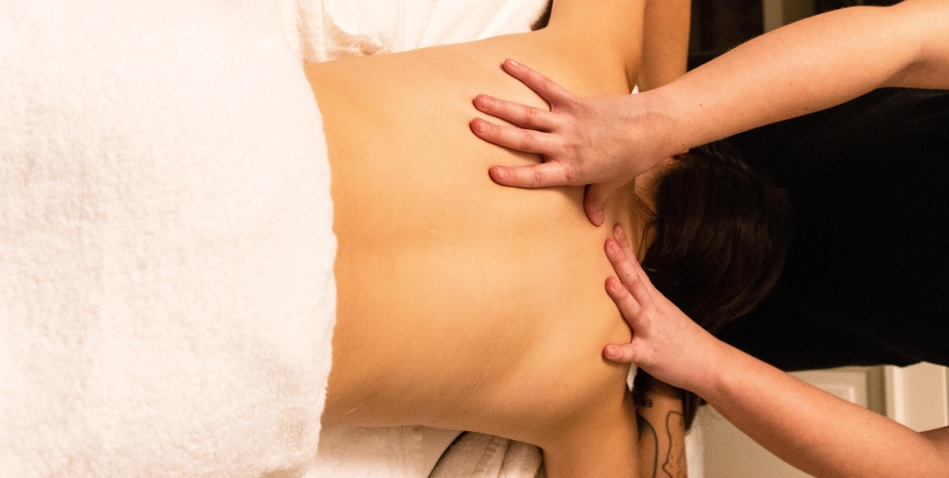

Hola!Si estás aquí es porque has pensado en cuidar tu cuerpo (es el que nos va acompañar toda la vida).
Estoy especializada en técnica superior de estética integral y bienestar de la salud,en Quiromasaje y Quiromasaje deportivo.
Así, puedo tratar cualquier dolor muscular que tengas.
Te aconsejaré con los mejores estiramientos para ti,ya que es lo más importante para evitar que te suceda lo mismo.
También puedo ayudarte con la nutrición y rehabilitación.
¿Te animas a mimarte?
Masajes
Nutrición
Belleza
Rehabilitación